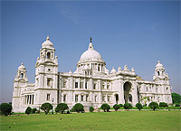

Victoria Memorial
The Victoria Memorial is a large marble building in Kolkata (Calcutta), West Bengal, India which was built between 1906 and 1921. It is dedicated to the memory of Queen Victoria (1819–1901) and is now a museum and tourist destination under the auspices of the Ministry of Culture. The Memorial lies on the Maidan (grounds) by the bank of the Hooghly River, near Jawaharlal Nehru road
The Prince of Wales, later King George V, laid the foundation stone on 4 January 1906 and it was formally opened to the public in 1921. In 1912, before the construction of the Victoria Memorial was finished, King George V announced the transfer of the capital of India from Calcutta to New Delhi. Thus, the Victoria Memorial was built in what would be a provincial city rather than a capital.